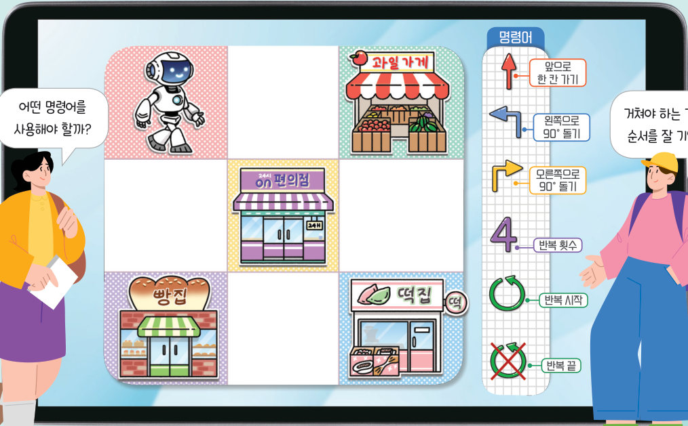

살아있는 교과서 · Ⅲ. 알고리즘과 프로그래밍 · 2. 프로그래밍 108~112쪽
프로그래밍
프로그래밍
시작하기
설계한 알고리즘을 컴퓨터가 이해하는 명령어로 나타내면 프로그램이 된다. 로봇에게 명령어로 길을 알려 주고, 엔트리의 화면 구성과 입력·처리·출력을 익힌 뒤, 변수를 이용한 두 수 계산기를 직접 실행해 보자.
🎯 학습 목표 — 프로그래밍의 개념과 구현 과정을 설명하고, 입출력을 이용한 사칙 연산 계산기 프로그램을 통해 프로그래밍 과정을 설명할 수 있다.
생각 나누기로봇을 움직이는 프로그램 작성하기 108쪽
내 프로그램
명령어를 눌러 프로그램을 만들고 ▶ 실행하세요. 로봇은 지금 오른쪽을 보고 있어요.
1명령어에서 반복되는 곳을 찾아 나타내면: 반복 횟수 → 반복 시작 → → → → 반복 끝
1. 프로그래밍프로그램 · 프로그래밍 · 프로그래밍 언어 109쪽
컴퓨팅 시스템으로 문제를 해결하기 위해서는 설계한 알고리즘을 컴퓨팅 시스템이 이해할 수 있는 명령어로 나타내야 한다. 이처럼 문제 해결을 위해 컴퓨팅 시스템이 이해할 수 있는 명령어를 처리 순서대로 모아 놓은 것을 프로그램이라고 하고, 프로그램을 만드는 과정을 프로그래밍이라고 한다. 이때 컴퓨팅 시스템에 명령을 내리기 위해 사용하는 언어가 프로그래밍 언어이다.
설계한 알고리즘에 따라 작성한 프로그램에 오류가 있거나 원하는 결과가 나오지 않으면 프로그램을 수정하고 재실행하는 과정을 반복한다.
언어 번역 작성한 프로그램이 컴퓨터에서 실행될 수 있도록 컴퓨터가 이해할 수 있는 언어로 바꾸는 과정
디버그(debug) 프로그램을 단계별로 실행시키면서 오류를 찾아내는 과정으로 디버깅이라고도 한다.
1[그림 Ⅲ-7] 컴퓨터를 이용한 문제 해결 과정의 순서를 골라 보자.
| 문제 이해 및 분석 | |
| 추상화 | |
| 알고리즘 설계 | |
| 프로그램 작성 및 수정 | |
| 실행(언어 번역) | |
| 결과 확인 |
2결과 확인에서 오류가 발견되면 .
2. 프로그래밍 환경 · 3. 프로그램의 입력·처리·출력엔트리 화면 구성과 인사하는 프로그램 110쪽
![[그림 Ⅲ-8] 엔트리 화면 구성 (https://playentry.org)](img/p110-entry.jpg)
1엔트리 화면 구성 요소와 설명을 연결해 보자.
| 오브젝트가 명령대로 실행되는 화면 | |
| 오브젝트들을 모아 놓은 곳으로 각각의 정보를 확인하고 수정할 수 있음 | |
| 블록을 종류별로 모아 놓은 곳 | |
| 명령어 블록을 이용하여 실제 프로그래밍을 하는 영역 |
2엔트리 실행 화면의 좌표는 가운데(x:0, y:0)를 중심으로 x축은 − ~ , y축은 − ~ 범위이다.
시작하기를 눌러 보세요
🤖
3인사하는 프로그램에서 입력·처리·출력을 연결해 보자.
| ‘홍길동’이라는 이름을 키보드에 입력한다. | |
| 대답과 ‘님 안녕하세요?’라는 말을 덧붙인다. | |
| 모니터 화면에 ‘홍길동님 안녕하세요?’가 나타난다. |
4. 프로그램 만들기 · 해 보기두 수를 입력받아 사칙 연산하기 — 두 수 계산기 111~112쪽
두 수를 입력받은 후 덧셈, 뺄셈, 곱셈, 나눗셈 오브젝트를 누르면 입력받은 두 수의 연산 결과를 알려 주는 프로그램을 만들어 보자. ➊ 두 수를 입력받아 ‘첫 번째 수’, ‘두 번째 수’ 변수에 저장한다. ➋ 두 수의 사칙 연산 결과를 ‘결과’ 변수에 저장한다. ➌ 엔트리봇을 누르면 기존 값을 모두 지우고 새로운 두 수를 입력받는다.
변수 프로그램 실행 과정에서 기억해야 할 값을 저장하는 공간이다. 한 개의 값만 저장되며, 기존의 값이 있으면 지워지고 새로운 값이 저장된다. · 산술 연산 덧셈, 뺄셈, 곱셈, 나눗셈의 사칙 연산과 거듭제곱, 절댓값 등. 특히 나눗셈에는 몫을 구하는 연산과 나머지를 구하는 연산이 있다.
첫 번째 수 0두 번째 수 0결과 0
엔트리봇을 눌러 두 수를 입력하세요.
1첫 번째 수에 17, 두 번째 수에 5를 입력하면: ＋ 결과 , － 결과 , × 결과 , ÷ 결과 , % 결과
2‘결과’ 변수에 22가 저장된 상태에서 × 오브젝트를 누르면 ‘결과’ 변수에는 .
3해 보기 % 오브젝트를 누르면 첫 번째 수를 두 번째 수로 나눈 를 ‘결과’ 변수에 저장한다. 어떤 수가 짝수인지 알아보려면 그 수를 (으)로 나눈 나머지가 인지 확인하면 된다.
스스로 정리하기프로그래밍 시작하기 109~112쪽
1프로그램과 프로그래밍
문제 해결을 위해 컴퓨터가 이해할 수 있는 명령어를 처리 순서대로 모아 놓은 것을 이라고 하고, 그것을 만드는 과정을 이라고 한다.
2변수
프로그램 실행 과정에서 기억해야 할 값을 저장하는 공간을 (이)라고 한다.
| 평가 기준 | 스스로 평가 |
|---|---|
| 프로그래밍의 개념과 구현 과정을 설명할 수 있는가? | |
| 입출력을 이용한 사칙 연산 계산기 프로그램을 통해 프로그래밍 과정을 설명할 수 있는가? |
제출학생 정보 · 제출하기
모든 활동을 마친 뒤 제출하면 전체가 한 번에 채점되고 피드백이 나타나요. 학년을 꼭 적어 주세요 — 답안은 선생님 스프레드시트(내 학년 시트의 정보 탭)에 기록돼요.